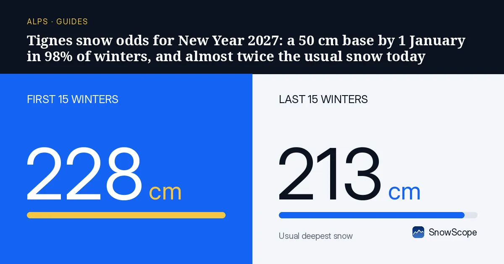
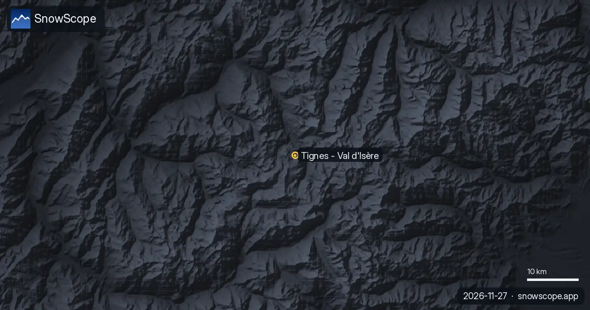

Tignes snow odds for New Year 2027: a 50 cm base by 1 January in 98% of winters, and almost twice the usual snow today
Tignes is one of the safest New Year bets in the Alps, and this season it starts ahead: at 2,503 m, the middle height of the Espace Killy, the snowpack is 87 cm, against a usual 48 cm for 27 November. In 98% of 46 winters there were more than 50 cm at that height by 1 January; a usual New Year's Day has 107 cm.
See the live snow forecast for Tignes - Val d'Isère in the SnowScope appSnow depth, powder alerts and the 3D map, free.

Why Tignes is ahead
The storms of the last week brought 82 cm to the upper slopes of the Espace Killy, the latest 13 cm in the three days to Friday. That fell on top of an early base, so the snow on the Grande Motte glacier and the Tovière ridge is already deep enough for most of the pistes above Val Claret.
The coming days are dry and cold: our forecast has almost nothing until the first days of December. Cold, dry weather keeps the snow in place and lets the resort make snow at night on the lower runs.
New Year in numbers
On 31 December the usual depth at 2,503 m is 106 cm, with a poor winter (one in ten) near 66 cm and a rich one near 152 cm. By 6 January it is usually 116 cm. In other words, the base keeps growing through the holiday fortnight.
The deepest of 46 winters, 1994-95, peaked at 295 cm; the leanest, 2001-02, at 152 cm. Even the leanest gave a skiable New Year at Tignes, which says more about its height than any single number.
Which part of Tignes to book
Tignes is not one village but five: Tignes-les-Brévières and Tignes-les-Boisses lower down the valley, Tignes-le-Lac, Le Lavachet and Val Claret around the lake. Val Claret and Le Lac sit by the lake, several hundred metres above the valley villages, so the snow reaches the door from the first weeks of the season; Les Brévières, near the bottom lift at 1,559 m, is the one where a ski-in finish depends on the December snow and the snowmaking on the home run.
For a New Year week, Val Claret gives the quickest access to the glacier and the Grande Motte funicular, Le Lac the best link to Val d'Isère and the Aiguille Percée. The Tignes snow page shows the base, mid-mountain and top every day.
The week itself
The holiday fortnight is the busiest of the season, and the 31st is a day of late starts and long lunches. The quietest ski hours are the first lifts of the morning and the last hour of the afternoon. New Year's Day itself is often the emptiest day of the week on the slopes.
Cold is the other constant: early January at 2,500 m regularly sees days well below freezing, and the high pistes stay wintry. Bring a neck warmer and a spare pair of gloves.
What could still go wrong
Two things: a long dry spell in December, which would leave the snow hard and icy rather than thin, and a warm, wet storm, which can bring rain to Les Brévières. Neither threatens the upper mountain at New Year in a winter that starts like this. Compare with the usual Christmas Day depth of 99 cm at 2,503 m: this year's late-November snowpack is already most of the way there.
Tips for skiers
- Book Val Claret or Tignes-le-Lac for New Year: the snow reaches the door and the glacier is one lift away.
- Ski early on 31 December and 1 January; the pistes are quietest before 10:00.
- Pack for real cold: early January on the Grande Motte is midwinter skiing.
- If you have a car, a day in Val d'Isère is part of the same lift pass and a good change of scene on 2 or 3 January.
- Read our Tignes snow by month guide and compare other resorts on the Alps snow hub.
- Plan dates and budget with the ski trip planner.
About these numbers
Snow numbers: SnowScope's snow map and forecast for today, and our record of 46 past winters at each resort (an estimate for the area, not the resort's own report).
Official avalanche bulletins: Météo-France – Bulletin d'estimation du risque d'avalanche
Cite this report
For research, teaching or the press: the numbers and charts are free to reuse under CC BY 4.0 with this citation.
SnowScope (2026), Tignes snow odds for New Year 2027: a 50 cm base by 1 January in 98% of winters, and almost twice the usual snow today, https://snowscope.app/blog/en/2026/11/tignes-new-year-2027-snow-odds-espace-killy-twice-the-usual-base.html, accessed 2026-11-27
SnowScope (Atlas Labs). (2026, November 27). Tignes snow odds for New Year 2027: a 50 cm base by 1 January in 98% of winters, and almost twice the usual snow today. SnowScope snow reports. https://snowscope.app/blog/en/2026/11/tignes-new-year-2027-snow-odds-espace-killy-twice-the-usual-base.html
BibTeX
@misc{snowscope2026tignesnewyear2027snowodd,
author = {{SnowScope (Atlas Labs)}},
title = {Tignes snow odds for New Year 2027: a 50 cm base by 1 January in 98% of winters, and almost twice the usual snow today},
year = {2026},
month = nov,
howpublished = {\url{https://snowscope.app/blog/en/2026/11/tignes-new-year-2027-snow-odds-espace-killy-twice-the-usual-base.html}},
note = {Published 2026-11-27 17:17 UTC; accessed 2026-11-27}
}· CC BY 4.0 · Methods, data and tools →
Tignes - Val d'Isère: snow and temperature by height, this winter vs last (tools) →
Follow Tignes - Val d'Isère
Free: a message when fresh snow is coming, and the forecast every morning.
More snow reports

Val d'Isère and the Espace Killy for beginners, improvers and experts, with the snow of 46 past winters at three heights.

Twelve famous Alpine resorts ranked by their usual December snow depth at mid-mountain and the top, from 46 past winters, with the poor-December floor for each and the weeks that never fail.